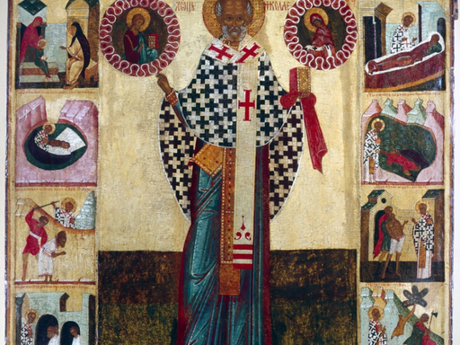

圣诞节是基督教世界最重要的节日之一，用来纪念耶稣基督的诞生。不过，《圣经》中并没有明确记载耶稣的具体出生日期，早期的基督徒也并不庆祝他的诞生，而是更重视复活节。 直到公元 4 世纪，罗马教会为了统一节日、同时融合古罗马农神节的传统，正式将 12 月 25 日定为圣诞节。传说中，耶稣诞生在伯利恒的马棚里，当玛利亚临盆时，约瑟和她找不到旅馆，只能在马槽里生下了耶稣，天使向牧羊人宣告了这个消息，东方三博士也循着星星的指引前来朝拜。后来，人们便以 12 月 25 日为纪念日，逐渐发展出了圣诞节的传统。
那个穿着红衣服、留着白胡子的圣诞老人在平安夜给孩子送礼物的圣诞老人，原型其实是公元 4 世纪小亚细亚米拉城的主教圣・尼古拉斯。他是一位乐善好施的人，经常匿名给穷人送礼物，尤其喜欢帮助孩子。 传说中，他曾悄悄给三个贫穷的少女送金币，让她们能顺利出嫁；也会在夜晚把礼物放进孩子们的袜子里。后来，圣・尼古拉斯的故事传到欧洲，荷兰人将他称为 “Sinterklaas”，传到英语区后变成了 “Santa Claus”。到了 19 世纪，可口可乐的广告让他红衣服、白胡子的形象深入人心，从此这个温暖的形象就成了圣诞节的象征之一。

圣诞树的传统最早可以追溯到德国，和日耳曼人的冬至习俗有关。在寒冷的冬天，常青的松树象征着生命的延续，人们会在冬至时用它装饰房屋，期待春天的到来。 后来，德国宗教改革家马丁・路德在一次圣诞夜散步时，看到繁星透过树枝闪烁，便在家里的常青树上点上蜡烛，模仿满天星光的样子，这就是现代圣诞树的雏形。人们还会在树上挂上代表圣饼的小甜饼、象征基督的蜡烛，以及彩球、星星等装饰，慢慢演变成了今天我们熟悉的圣诞树。

更多内容可以百度一下